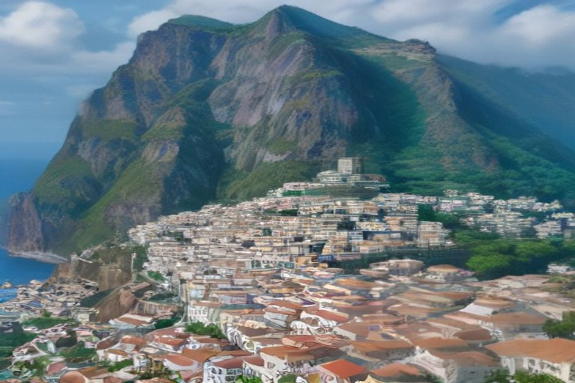
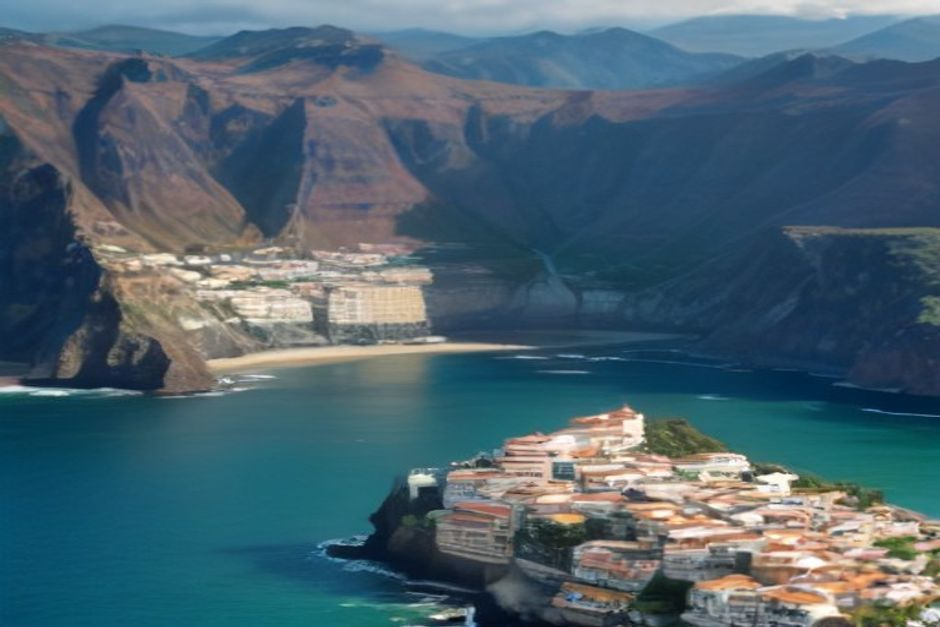

Madeira si posiziona costantemente tra i luoghi più sicuri d'Europa da visitare — ma "sicura" non significa priva di rischi. I veri pericoli qui non sono la criminalità, ma le strade di montagna, i sentieri bagnati e l'Atlantico aperto. Ecco cosa conta davvero prima di partire.
Madeira è sicura da visitare?
Sì — Madeira è una delle isole più sicure d'Europa da visitare, e il Portogallo si colloca stabilmente tra i primi 10 paesi più sicuri al mondo secondo il Global Peace Index. La criminalità violenta contro i turisti è rara, l'isola ha una presenza di polizia visibile e attenta ai visitatori attorno a Funchal e ai principali resort, e la maggior parte dei soggiorni si svolge senza alcun incidente di sicurezza. I rischi che contano davvero qui non hanno quasi nulla a che fare con le persone — derivano dal sottovalutare il terreno, il meteo o il mare, ed è proprio su questo che si concentra il resto di questa guida.

Madeira è sicura per chi viaggia da solo e per le donne sole?
Sì. Madeira è spesso citata come una delle destinazioni più sicure d'Europa per i viaggi in solitaria, incluse le donne che viaggiano da sole, e la popolazione locale è generalmente abituata a turisti indipendenti che esplorano a piedi, in autobus e in auto a noleggio. Valgono le stesse precauzioni di buon senso che si userebbero in qualsiasi città europea: preferire le strade ben illuminate a Funchal di sera, tenere le borse chiuse e il telefono lontano dalle tasche posteriori nei vicoli più affollati della Zona Velha, e usare taxi autorizzati o app di ride-hailing invece di auto non contrassegnate dopo il tramonto. A parte questo, la maggior parte dei viaggiatori solitari si dice più prudente su un sentiero bagnato in cima a una scogliera che nel camminare da sola di notte.
Quali sono i rischi reali più grandi in visita a Madeira?
I tre rischi che causano davvero incidenti sono le strade di montagna, i sentieri escursionistici esposti e le condizioni del mare imprevedibili — non la criminalità. Il territorio di Madeira è spettacolare: pendii vulcanici ripidi, scogliere a picco sul mare e una rete stradale che sale e scende continuamente tra il livello del mare e le vette centrali. Questa geografia è esattamente ciò che rende l'isola così bella, ed è esattamente ciò che coglie di sorpresa i visitatori che trattano un tornante di montagna o un sentiero in bilico su una scogliera come farebbero con un tranquillo percorso costiero di casa propria. Rispettare il territorio rende Madeira straordinariamente mite; ignorarlo, ed è il territorio, non l'isola, a farsi sentire.
È sicuro guidare a Madeira?
Sì per chi guida con attenzione e sicurezza, ma le strade sono il pericolo quotidiano più grande dell'isola. La superstrada VR1 che collega Funchal all'aeroporto e alla costa ovest è moderna e ben progettata, ma le strade secondarie ER che salgono verso le montagne e corrono lungo la costa nord sono strette, ripide e piene di tornanti, gallerie e curve cieche con strapiombi su un lato. In Portogallo si guida a destra, carburante e auto a noleggio si trovano facilmente, e un'auto più piccola è in pratica più semplice da gestire su queste strade rispetto a un grande SUV. Evitate i percorsi di montagna sconosciuti al buio o con nebbia, fate attenzione a ciclisti e scooter nelle curve cieche, e non affrettatevi: i tempi di percorrenza sulla mappa sono quasi sempre più lunghi nella pratica di quanto suggerisca la distanza.
I sentieri escursionistici e i percorsi delle levadas di Madeira sono pericolosi?
Alcuni tratti lo sono davvero, e meritano di essere presi sul serio invece di essere trattati come tranquille passeggiate in campagna. Alcuni percorsi — tra cui tratti esposti del PR1 verso il Pico do Arieiro e alcuni dei sentieri delle levadas più antichi — corrono lungo bordi di scogliera privi di recinzioni, attraversano gallerie non illuminate o percorrono terreni che diventano scivolosi e pericolosi dopo la pioggia. L'approccio più sicuro è restare sui sentieri PR ufficiali e segnalati, controllare il sistema di prenotazione SIMplifica prima di partire (segnala anche le chiusure dei sentieri dopo frane o danni da tempesta), portare una torcia frontale per i tratti in galleria, indossare scarpe con una presa adeguata invece dei sandali, e tornare indietro se un sentiero sembra più bagnato o più stretto del previsto. È meglio evitare di camminare da soli sui percorsi più esposti; le passeggiate più semplici e adatte alle famiglie, come quella da Ribeiro Frio a Balcões, non presentano nessuno di questi rischi.
Il mare e il nuoto sono sicuri a Madeira?
Dipende interamente dal luogo e dal giorno. Madeira non ha quasi spiagge di sabbia naturale — la maggior parte dei bagni avviene in insenature rocciose e piscine naturali di origine vulcanica, dove moto ondoso, correnti e onde improvvise possono essere realmente pericolosi nei siti non sorvegliati, soprattutto in inverno e dopo le tempeste atlantiche. Le spiagge sorvegliate da bagnini come Praia Formosa e Calheta sono la scelta più sicura per un bagno occasionale, con bandiere che indicano le condizioni del giorno. Le insenature aperte lungo la costa sud sono più calme e limpide in estate, ma è meglio visitarle con qualcuno che legge il mare per mestiere piuttosto che affidarsi al proprio giudizio dalla riva — proprio per questo una gita privata in barca con Chifbay si ferma per nuotare solo dopo che lo skipper ha verificato che l'insenatura sia riparata e le condizioni siano giuste, e non secondo un programma fisso indipendentemente dal mare.
Madeira presenta rischi sismici o vulcanici?
Nessun rischio vulcanico rilevante, e solo terremoti rari e di lieve entità. Madeira è un'isola vulcanica dormiente senza eruzioni registrate in epoca storica, e si trova in una zona relativamente stabile dell'Atlantico centrale lontana dalle principali faglie, quindi l'attività sismica è poco frequente e di bassa intensità quando si verifica. Il pericolo legato al meteo che vale davvero la pena tenere d'occhio è la pioggia intensa: in passato sistemi temporaleschi violenti hanno causato gravi alluvioni lampo e frane sull'isola, in particolare nel febbraio 2010, quindi conviene controllare gli avvisi dell'IPMA (il servizio meteorologico nazionale portoghese) durante il soggiorno ed evitare percorsi ripidi e non asfaltati durante o subito dopo forti piogge.
E la microcriminalità e le truffe ai turisti?
I reati denunciati contro i turisti sono pochi, ma non sono zero, quindi la normale prudenza resta d'obbligo. Piccoli furti opportunistici possono verificarsi in luoghi affollati come il Mercado dos Lavradores o nelle strade più frequentate di Funchal durante i festival, e le auto a noleggio lasciate nei parcheggi isolati all'inizio dei sentieri sono occasionalmente prese di mira per oggetti di valore visibili — non lasciate mai borse, macchine fotografiche o documenti in vista dentro un'auto parcheggiata. Le vere e proprie truffe sono rare; il fastidio più probabile è un menu sovrapprezzato in un ristorante rivolto proprio ai turisti di passaggio, più che qualcosa di realmente disonesto.
Consigli pratici di sicurezza per visitare Madeira
Una breve lista copre la maggior parte di ciò che conta: controllare gli avvisi meteo dell'IPMA prima di escursioni o gite in barca, prenotare i sentieri più popolari tramite SIMplifica in anticipo, indossare calzature adeguate per qualsiasi passeggiata lungo le levadas, non nuotare mai in un'insenatura non sorvegliata senza prima verificare le condizioni locali, chiudere a chiave l'auto e tenere gli oggetti di valore fuori vista all'inizio dei sentieri, acquistare un'assicurazione di viaggio che copra realmente escursionismo e sport acquatici, e salvare il 112 (il numero di emergenza valido in tutta l'UE) nel telefono prima di atterrare. Niente di tutto questo è esclusivo di Madeira — è la stessa disciplina che premia qualsiasi destinazione montuosa e costiera — ma è la differenza tra un viaggio che va esattamente come previsto e uno che non lo fa.

Il pericolo a Madeira non è mai stato la gente. È sottovalutare una strada di montagna, un sentiero bagnato o il moto ondoso dell'Atlantico.
Rispettate il territorio e il mare, e Madeira vi ricambierà con uno dei viaggi insulari più sicuri e gratificanti d'Europa — scogliere, foreste e coste che meritano davvero ogni attenzione.